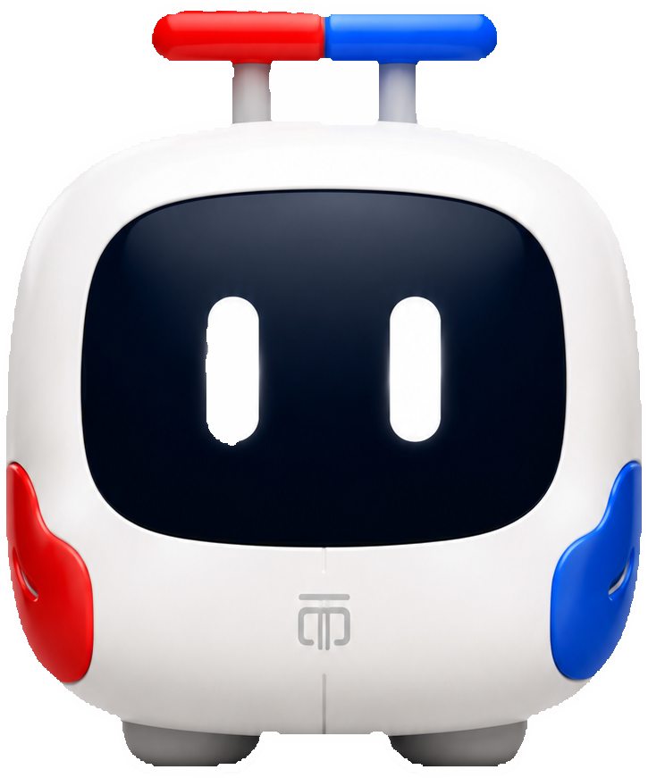
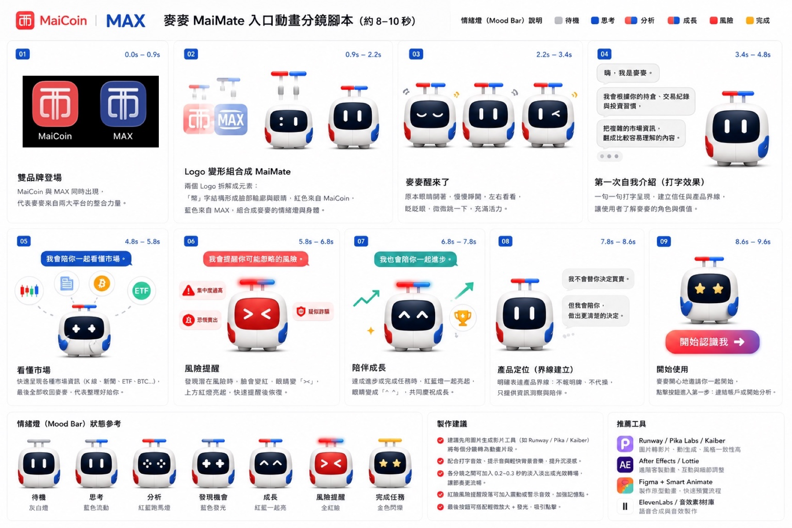
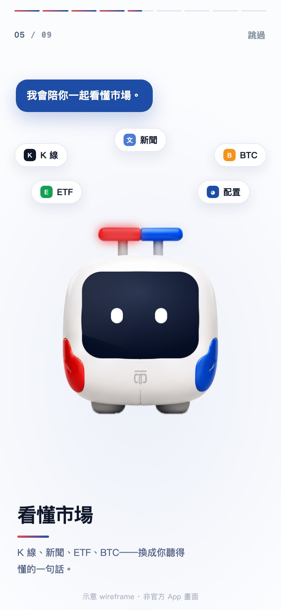
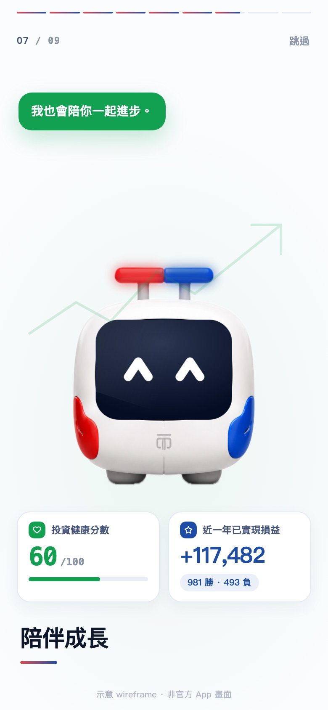
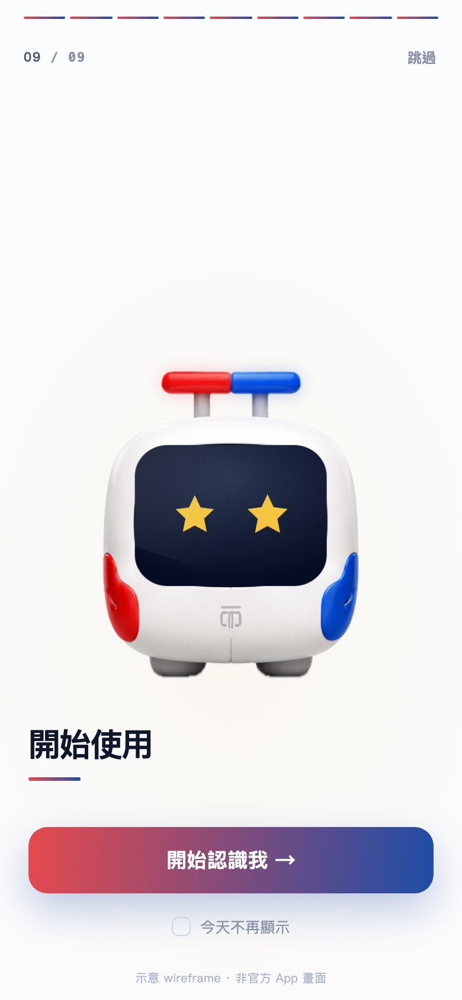

MaiMate麥麥
別的投資工具看市場。
麥麥同時看你。
2026 雲湧智生黑客松 · MaiCoin 智慧理財命題 · 隊伍「第五名」
https://d1z0776b4u2tmf.cloudfront.net — 現在就能點
2017 年，
我第一次走進幣圈。
最深的感覺不是興奮。
真正的風險，可能不是市場。
是你沒有看見自己。
10,000
一個真實帳戶、一整年的交易紀錄，被重新理解了一遍
+117,482
他以為自己一直在虧錢。其實這一年的已實現損益是正的
26,598,877
重複在急跌時賣出，所錯過的機會成本（依既定方法回推的歷史數字，非帳戶損失）
所以我們沒有再做一張更複雜的圖表。
我們做了一個先看懂你，再陪你看市場的 AI 投資夥伴。
MaiMate麥麥
Mai
來自 MaiCoin 與 MAX
它是從這兩個品牌長出來的
它不會替你決定買賣。
但它會陪你，做出更清楚的決定。
麥麥不只回答問題。
它陪使用者走完一次決定。
①
看懂你
交易紀錄、投資樣貌、行為盲點
10,000 筆交易全解析
追高指數 65.0%、殺低 34.1%
已實現損益 +117,482、勝率 66.6%
機會成本歸因、最痛單筆回推
投資健康分 60（加權公開）
創意度 25%
AI 設計 15%
企業資料應用
②
看懂現在
MAX 即時行情、持倉、交易史、RAG 知識庫
ticker／kline／depth 三支公開 API
OHLCV 與價差由程式正規化
行情列可展開 K 線
RAG 知識庫，回答附出處
Bedrock 工具迴圈，LLM 手上六個工具
技術可行性 20%
主題切合度 10%
MAX Public API
③
把選擇說清楚
人話解釋、風險提醒、三方案比較
保守／原意圖／暫停冷靜期三方案
每案四個數字：金額、手續費、
執行後集中度、行為註記
手續費 maker 0.08%／taker 0.16%
對等呈現，不標推薦（不報明牌）
工具鏈 chips，看得見它在查什麼
AI 設計 15%
商業應用性 20%
個人化體驗
④
安全地行動
訂單草稿、二次確認、Private API、完整留痕
prepare／execute 分離，送單在另一支 Lambda
60 秒單次憑證，重放回 410
確認卡列出手續費與滑價提醒
7/31 真實成交兩筆（最小額度）
金鑰只開讀取＋交易，不開提領
完成度 10%
MAX Lv2 Private API +5%
安全與法遵
⑤
陪你繼續成長
三種模式、投資健康、學習與回顧
安心白話／成長陪跑／專業效率
數字不隨模式變，只換說法密度
決策軌跡 append-only，六種事件
逐項授權開關，可隨時撤回
PWA 可加到主畫面、斷網有離線劇本
創意度 25%
商業應用性 20%
留存與長期價值
AWS Bedrock Agent ｜ MAX API ｜ Kiro 規格驅動 ｜ 線上實測
投資人不必
再多裝一個 App。
麥麥就掛在 MAX 的導覽列裡——
主交易系統一行都不用改。
- 以 sidecar 形式外掛，不侵入主系統
- 產品化只換兩件事：WebView 入口與平台 OAuth
- 升級迭代不影響核心交易系統
技術可行性 20%主題切合度 10%完成度 10%
它的臉，
是兩個品牌長出來的。
紅色來自 MaiCoin，藍色來自 MAX——
拆解重組成麥麥的情緒燈與身體。
- 九屏入口動畫，八到十秒建立角色與界線
- 情緒燈七種狀態：思考、分析、風險提醒、完成任務
- 第一句話就講清楚：「看懂你的投資，而不是替你決定」
創意度 25%主題切合度 10%
紅色的 MaiCoin、藍色的 MAX——合成一個夥伴
在讀你的資料以前，
它先把界線劃好。
授權畫面不是法務文件，
是產品的第一個功能。
- 只讀取，不操作 · 不會自動下單
- 可隨時撤回授權 · 僅用於個人化分析與教育陪伴
- 每一項資料逐項開關，必要與選擇性分開標示
AI 設計 15%完成度 10%安全與法遵
持倉 · 12 個月交易紀錄 · 入出金 · 使用紀錄——你自己決定給哪些
一分鐘的對答，
決定它怎麼跟你說話。
問卷結果不是貼標籤，
是決定用哪一種語氣陪你。
- 安心白話 · 成長陪跑 · 專業效率
- 由確定性規則判定，會說明判定依據
- 語氣隨階段變，數字永遠不變
創意度 25%商業應用性 20%留存與長期價值
在看市場以前，
麥麥先看懂你。
把使用者看不見的行為模式，
變成他看得懂的四張卡。
- 分析 10,000 筆交易紀錄
- 追高 65% · 集中度 98.6% · 下跌後出金只有 14.2%
- 投資健康分：加權方式攤開給你看，不是黑盒
創意度 25%AI 設計 15%企業資料應用
原本的我 vs 最近的我 → 變化從哪來 → 麥麥幫你注意到
「ETH 跌太多了，
幫我全部賣掉。」
麥麥收到的不是一個指令。
而是一個需要被理解的時刻。
- Agent 自主查詢 MAX 即時行情
- 讀取持倉、餘額與交易歷史
- Tool chips 即時呈現資料來源
AI AgentMAX API技術可行性 20%
輸入「全部賣掉」→ ticker → portfolio → 交易歷史 → 分析中
好的陪伴，
不是永遠說好。
它做的是一件過去做不到的事——
在行動發生的當下，把這個人的歷史帶回來。
- 比對本次行為與歷史模式
- 攤開賣出後又漲上去的機會成本
- 用提問取代武斷的買賣建議
創意度 25%AI 設計 15%個人化風險提醒
「這次的行為，和你過去幾次急跌時全部離場的模式相似。」
不給一個答案。
給你三條看得懂的路。
金額、費用與賣後持倉全部由程式計算。
AI 不算金融數字，也不標記推薦。
- 全部賣出 · 賣出 25% · 暫停／冷靜期
- 每案顯示成交金額、手續費、剩餘持倉、集中度變化
- 「暫停」導向定期定額——把一次性手續費變成年金
AI 設計 15%技術可行性 20%商業應用性 20%
三張方案卡切換 → 比較表更新 → 選定後只建立訂單草稿
AI 有手。
方向盤仍在你手上。
這不是一段免責聲明。
是 AI 即使想越權，也沒有路可以走。
- 訂單草稿不等於下單；二次確認後才送出
- 60 秒憑證，失效且不可重放
- MAX Private API 真實成交 · 決策軌跡全程留痕
完成度 10%MAX Lv2 Private API +5%技術可行性 20%
確認卡（60 秒倒數）→ 7/31 真實成交 #20720919534 → 決策軌跡
安心白話 → 成長陪跑 → 專業效率
麥麥不是要讓人永遠依賴 AI。
是陪一個人，慢慢長成
能為自己做決定的人。
MaiCoin 說，數位資產是實現理想生活的選擇權。
我們把那句話，做成了三條看得懂的路。
未來，由你定義 ｜ Own Your Future
命題對照
命題方列了六條期望用途。六條我們都做了。
引自 MaiCoin《AWS AI 黑客松工作坊－命題說明》第 28 頁「模擬資料集參考用法」
| MaiCoin 期望的用途 | 麥麥做到什麼 |
|---|
| 分析用途 |
| 資產價值變化 |
帳戶變化歸因：2025-12 的變化 99.7% 來自出入金淨額、0.3% 來自市價波動 |
| 操作習慣 |
追高指數 65.0%、殺低 34.1%、出金紀律 14.2%、月均 389.5 筆 |
| 改善建議 |
三方案對等呈現＋暫停冷靜期——給建議，但不報明牌 |
| 與外部資訊連結 |
MAX ticker／kline／depth ＋ RAG 知識庫，回答附出處 |
| 呈現用途 |
| 視覺化重要資訊 |
投資健康分 60（加權公開）、行為卡、工具鏈 chips |
| 查詢工具 |
對話式查詢，LLM 手上六個工具，每次呼叫都在畫面上亮一個 chip |
說明的最後一句是「僅供參考，期望大家發揮創意」——
我們的創意是：分析完之後，把決定權還回去。
安全邊界
「AI 會不會亂花我的錢？」
✓麥麥能做的
- 查你的交易歷史，找出行為盲點
- 查 MAX 的即時行情
- 算出三種方案，數字全由程式計算
- 生成一張交易確認卡，等你決定
✕麥麥做不到的
- 直接下單——下單函式不在它的工具清單裡
- 繞過確認卡——送單的是另一支程式
- 修改決策軌跡——稽核紀錄只能新增
- 提領你的資金——資產留在 MAX
AI 只有「草擬權」。扣板機的絕對控制權，永遠在你手上。
而且每一張確認卡只有 60 秒時效——過期作廢，不可重放
技術架構
五支 Lambda，一個工具迴圈，
一條被架構切斷的下單路徑
前端 → API → 迴圈
S3＋CloudFront 的 Vanilla JS PWA → API Gateway（/health /market /chat /order /audit）
→ Bedrock Converse 工具迴圈：Haiku 對話調度、Sonnet 深度歸因。
工具端：MAX Public API（ticker／kline／depth）、Knowledge Base（S3 Vectors・13 篇語料）、行為引擎（10,000 筆預計算）。
execute_order 不在工具清單
真正送單的函式存在，但不在模型看得到的 TOOLS、也不在分派表——模型推論時看不到它的定義，
就算幻覺出這個名字也沒有東西會被執行。
唯一送單路徑在另一支 Lambda，觸發條件是使用者按下確認＋60 秒憑證。
金融數字由程式算
價差 spread_pct、時間戳台北／UTC 都由後端算好給模型，LLM 不得自行計算。
LLM 只負責理解、整合、解釋。
每一條主張都附檔案:行號，見 docs/ARCHITECTURE.md ／ COMPLIANCE.md。
安全與法遵
合規不是免責聲明，是系統設計
金融 AI 最常見的做法是寫一段免責聲明，然後照做原本想做的事。
我們相反：先問「這件事能不能在架構上做不到」——做得到就從系統裡拿掉。
| 紅線 | 怎麼做到的（不是提示詞，是能力缺失） |
|---|
| 不代操 | LLM 工具清單裡沒有 execute_order；送單在另一支 Lambda，只認使用者按下的 60 秒憑證 |
| 不報明牌 | 提示詞規則＋正則攔截＋三方案一律對等呈現、不得標推薦（實測連跑 6 次全乾淨） |
| 不碰保管提領 | 資產留在 MAX；API Key 只開「讀取＋交易」，不開提領 |
| 可問責 | 工具呼叫、草稿、確認、成交全部寫進 append-only 稽核軌跡，使用者端可見 |
| 穩健 | 任一 API 掛掉自動降級離線 mock 並明示標示；斷網不假造行情 |
商業模式
這不是幫客戶省錢的工具——
它是手續費放大器
交易所的收入核心是成交手續費（MAX 現貨基礎：掛單 0.08%／吃單 0.16%，2026-07 查證）。
| 收入線 | 機制 | 量化（估算，標注假設） |
|---|
① 手續費放大
今天就在收 |
新手「看不懂→不敢交易」→ 陪跑出第一筆單；恐慌離場的用戶 LTV 歸零 → 攔住＝保住未來年金 |
月交易額 50 萬的散戶 → 平台月收 NT$250–750/人；年 4,674 筆的活躍戶流失一個，一年少收上萬到數十萬 |
| ② 冷靜期 → 定期定額 |
「暫停」不是不賺——導向 MaiCoin 既有 DCA 產品 |
衝動交易手續費是一次性；DCA 是年金 |
③ Premium 訂閱
第二曲線 |
損益歸因、年度健檢、即時行為提醒 |
月費 99–199；假設 10 萬活躍用戶滲透 5% ＝ 月收 50–100 萬 |
④ B2B 白牌
第三曲線 |
行為引擎＋合規 Agent 框架授權其他交易所／銀行財管 |
授權費＋分潤；台灣 VASP 專法後合規需求放大 |
成本與可行性
省錢是設計出來的，不是省出來的
| 工作 | 模型 | 成本 |
|---|
| 日常對話＋工具調度 | Claude Haiku（Bedrock） | ≈NT$0.3/次 |
| 深度歸因＋方案解釋 | Claude Sonnet（Bedrock） | ≈NT$2.2/次 |
| 混合平均＋prompt caching | — | <NT$0.6/次 |
省錢三決策
① S3 Vectors 取代 OpenSearch，避開月費上萬的陷阱
② 全 serverless，零閒置費用
③ 模型分層＋prompt caching，成本打到一折
千人規模基礎設施 <NT$3,000/月。單價以 AWS 主控台現價估算，非實測。
價值錨點
此帳戶平均每筆賣出的機會成本
NT$11,480
一年攔住 一筆 衝動交易
＝ 16 年的 AI 成本
留存率每提高 1%，手續費增量遠大於整個 AI 帳單。
完成度 · Lv2 Private API · Kiro
不是 demo 影片，是線上服務
已上線並驗收
後端驗收 21/22 通過｜前端完整性 13/13｜Python 單元 50 項
砍掉整套 stack 從零重建 實測 46 分鐘
手機實機：PWA 可加到主畫面、斷網可開
每次推送 CI 自動跑全套測試
為了因應官方環境當天才公布，一切設定走環境變數、零硬編碼。
Lv2 Private API 真實成交
7/31 真實帳戶、本人資金、最小額度
單號 #20720919534
單號 #20721028463
MAX App 推播確認、ETH 餘額 +0.0102
打通過程修掉六個各自足以讓下單失敗的問題（簽章、volume key、憑證入庫、低於交易所下限、四捨五入、確認鈕連按）。
Kiro 全程參與
.kiro/steering × 4（全隊＋所有 AI 工具共用的開發紀律）
.kiro/specs × 7（行為引擎／對話／Profile／三方案／下單／稽核／部署演練）
MCP 設定、Autopilot 只在跑定義好的 task 時開
steering 是唯一真相來源——用其他 AI 開發時也把它餵進去。
入口動畫分鏡（約 8–10 秒）

入口動畫實機定格
九幕裡的三幕，就把整個產品講完了。

看懂市場 K 線、新聞、ETF、BTC——換成你聽得懂的一句話

陪伴成長 健康分 60、已實現損益 +117,482，都是真實值

開始使用 先講清楚界線，再開始
評審可能會問的 — 產品與商業
- 這跟我自己去問 ChatGPT 有什麼不一樣？
- 三件它做不到的：一、它不知道你 1/8 賣 DOGE 少賺 31 萬——我們讀你自己的一萬筆。
二、它的數字是生成的，我們的數字是程式算的。三、它不能替你下單，我們可以，但被架構鎖在逐筆確認後面。
- 交易所為什麼要買單？這不是叫用戶少交易？
- 相反，它是手續費放大器：① 新手「看不懂→不敢交易」，陪跑出憑空長出來的第一筆單
② 恐慌離場的用戶 LTV 歸零，攔住＝保住未來年金 ③ 冷靜期導向定期定額，一次性手續費變年金。
用戶月交易額 NT$4 萬，手續費就覆蓋整個 AI 成本。
- 要整合進 MAX App 要改多少？
- 零。它是掛在旁邊的 sidecar。產品化只換兩件事：入口改 App 內嵌、API Key 改平台 OAuth。
下單路徑與確認流程不變，主交易系統一行都不用動。
- 只有一個帳戶一萬筆，怎麼泛化？
- 誠實說：我們只驗證了這一個帳戶。但行為引擎算的是規則不是模型，任何帳戶丟進去都能算，
不需要訓練。要泛化的是閾值，那需要平台母體資料——這正是我們想跟 MaiCoin 一起做的下一步。
- 三個模式只是換句話說？
- 只改說法的密度，數字一個都不會變——因為數字是程式算的，LLM 只負責講成人話。
換模式不會換到不同的事實。
- 成本多少？規模化撐得住？
- Haiku 約 0.3 元／次、Sonnet 約 2.2 元／次，混合加快取 <0.6 元／次；千人規模基礎設施
約 3,000 元／月。這是以 AWS 現價估算，不是實測——我們沒埋量測成本的程式。
價值錨點：此帳戶平均每筆賣出機會成本 NT$11,480，一年攔一筆＝16 年 AI 成本。
- 怎麼確定 AI 不會亂下單？
- 不是靠提示詞，是能力缺失。真正送單的
execute_order 不在 LLM 的工具清單、
也不在分派表——模型推論時看不到它的定義。唯一送單路徑在另一支 Lambda，只認使用者按下的 60 秒憑證。
- AI 會不會報明牌？
- 提示詞規則＋正則攔截＋三方案一律對等呈現不得標推薦。實測同一句劇本連跑 6 次全乾淨。
- 數字會不會不準？滑價呢？
- 三方案金額隨即時報價浮動，確認卡上有紅字滑價聲明。買賣價差
spread_pct 與台北／UTC 時間戳都由後端算好給模型，LLM 不得自行計算。
- 完成度到哪？
- 後端驗收 21/22、前端 13/13、Python 50 項；真實成交打通那次修掉六個各自足以讓下單失敗的問題；
砍掉整套環境從零重建實測 46 分鐘。
評審可能會問的 — 我們還沒做到的
這一節存在的理由：
上面每一條都有證據，這一節才可信。
- Bedrock Guardrails 有開嗎？
- 目前刻意停用。
護欄一命中會把整段回覆換成罐頭語，「反問＋脈絡」的敘事會整個消失，比原問題更糟。
要正確啟用需對 input／output 套用不同政策——賽後待辦。
現階段前四層護欄各自獨立有效。
- 費率數字哪裡來的？
- MAX 現貨 maker 0.08%／taker 0.16%，2026-07 查證。
程式碼裡只有註解沒有 URL，上線前要補官方連結。
MAX Token 折抵等數字查不到可引用出處，所以今天不放進簡報。
- 成本是實測嗎？
- 不是，是估算。
以 AWS 主控台現價推算，backend 沒有任何量測成本的程式碼。把估算講成實測，被追問就崩。
- 有過法遵嗎？
- 沒有。
我們寫明這是工程自查不是法律意見。虛擬資產專法立法中，商業化前必須過正式法遵。
但金管會 AI 指引六原則我們逐條對照，每一條都指得出程式碼位置——
指不出來的就寫在這一節。